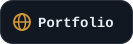
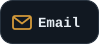
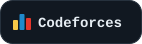
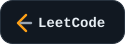
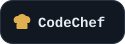
Built From Scratch
Live Sites: Valence · RailFlow
Every image here is an SVG drawn by a few hundred lines of JavaScript from public data, redrawn every six hours by GitHub Actions. No third-party stat cards.